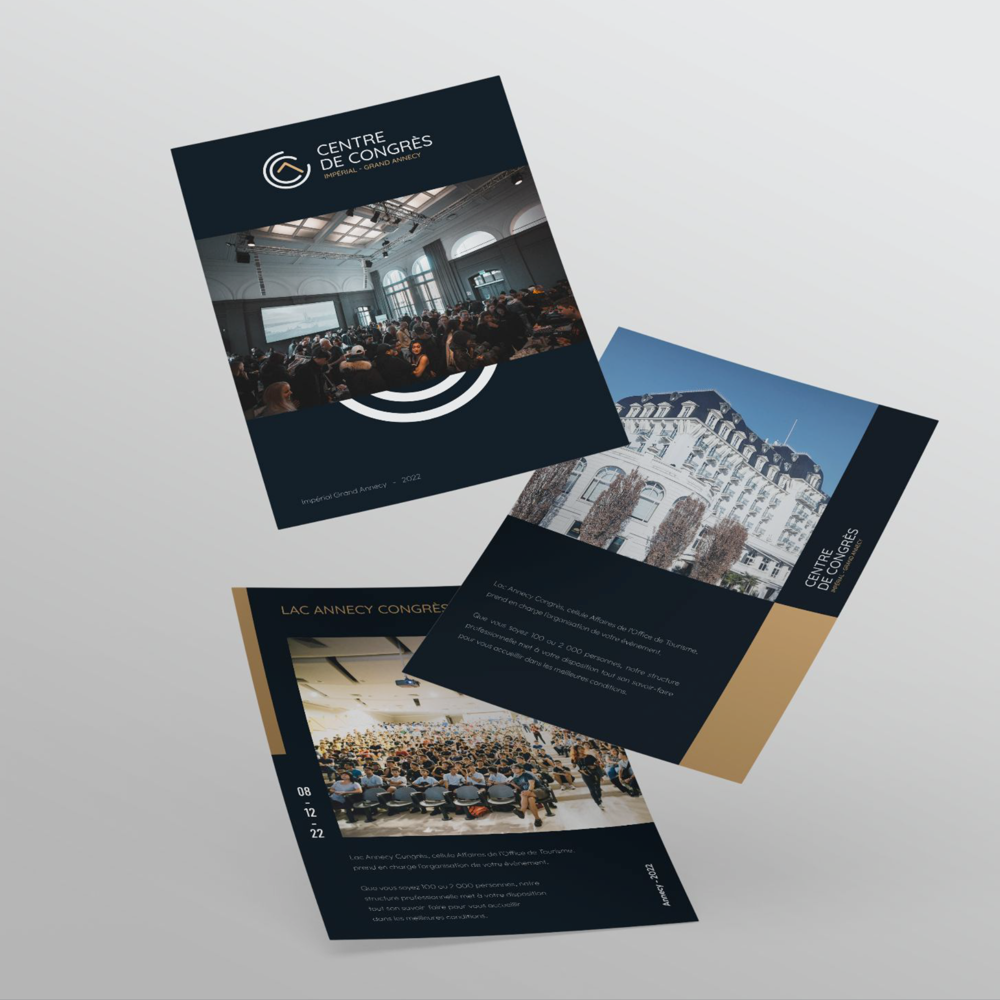
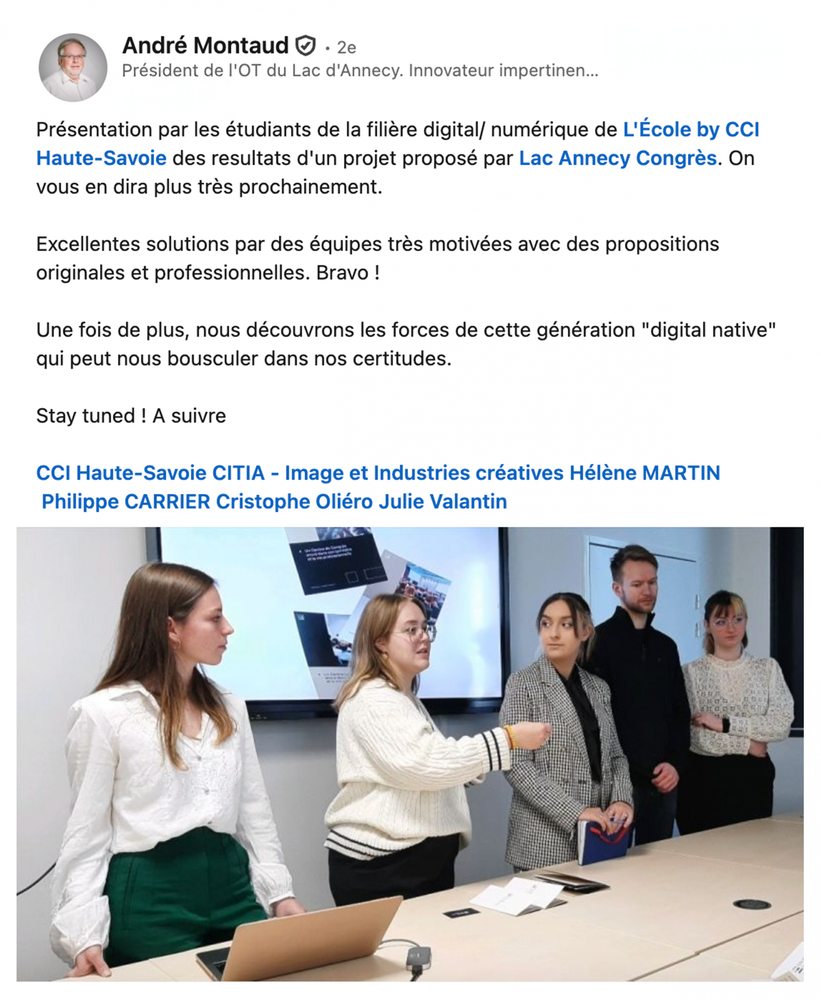
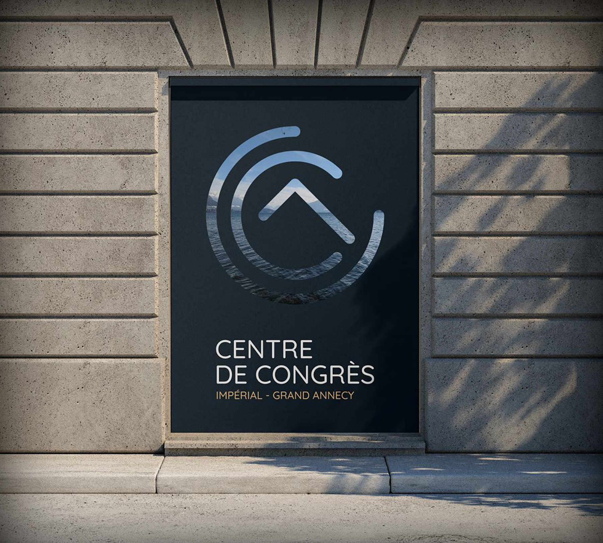
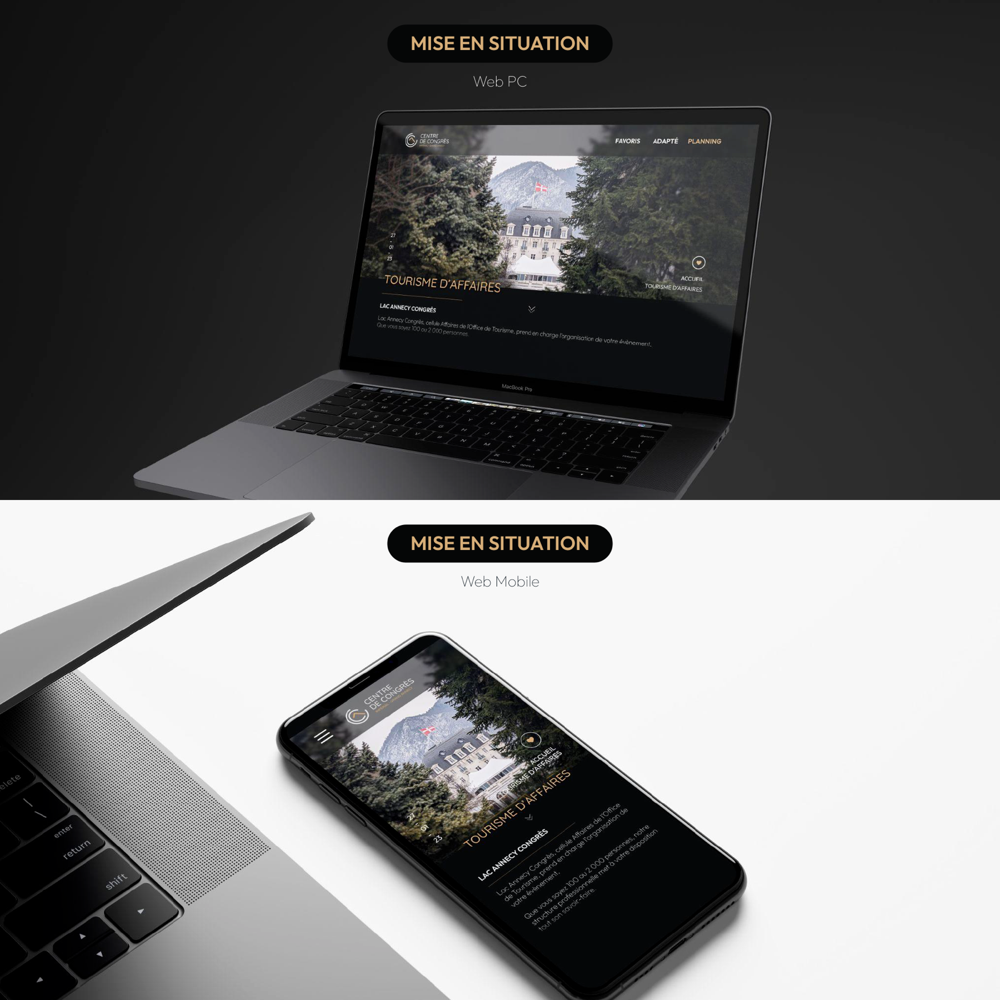

Réinventer l'image d'un lieu de prestige au cœur des Alpes.
En dernière année à l'École des Gobelins à Annecy, j'ai eu l'opportunité de participer à un concours de création d'identité visuelle pour le Centre de Congrès d'Annecy, situé dans l'enceinte du Palais de l'Impérial.
En binôme avec Léa, nous avons conçu un logo qui intègre les initiales CCA avec des éléments de paysage montagnard, représentant la transition, l'innovation et l'ancrage géographique d'Annecy. Notre proposition a été retenue parmi une vingtaine de participants et a atteint la finale — nous avons décroché la troisième place.
Au-delà du résultat, ce projet nous a apporté une expérience concrète dans la méthodologie design, le travail en équipe sous contrainte et la présentation face à un jury professionnel.



